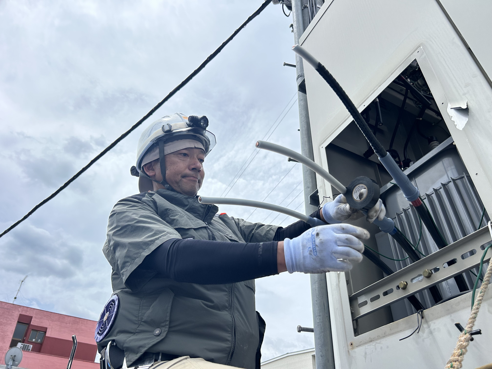
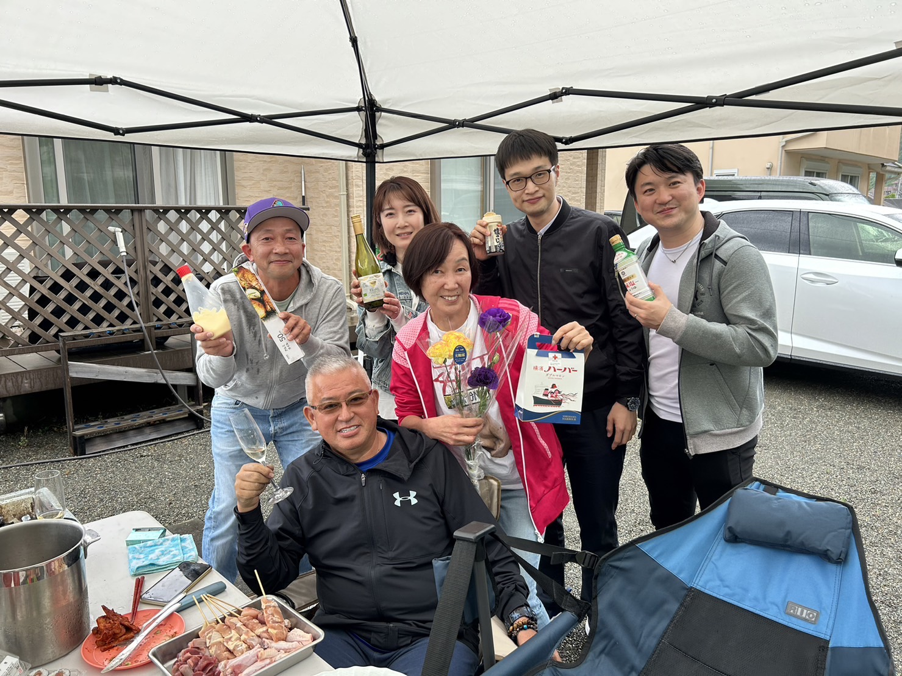

ご挨拶

電気工事の専門家、中村です。中村電気は、地域の皆様に安心と安全をお届けする電気工事のパートナーです。
「コンセントを増やしたい」「照明を新しくしたい」といった日常のちょっとしたご要望から、「急にブレーカーが落ちた」などの緊急トラブルまで、国家資格を持ったプロが迅速・丁寧に対応いたします。お見積もりは無料ですので、まずはお気軽にご相談ください。
神奈川県相模原市を中心とした電気工事の専門家。
コンセント増設から漏電トラブル対応まで、お家の電気工事はお任せください。
電気工事の専門家、中村です。中村電気は、地域の皆様に安心と安全をお届けする電気工事のパートナーです。
「コンセントを増やしたい」「照明を新しくしたい」といった日常のちょっとしたご要望から、「急にブレーカーが落ちた」などの緊急トラブルまで、国家資格を持ったプロが迅速・丁寧に対応いたします。お見積もりは無料ですので、まずはお気軽にご相談ください。

ご家庭のあらゆる電気トラブル・工事に対応いたします。

代表 : 中村
保有資格 : 第二種電気工事士
対応エリア : 相模原市全域および近郊エリア
お客様とのコミュニケーションを第一に考え、施工内容や費用について、作業前に必ずわかりやすくご説明いたします。見えない部分の配線も、きれいで安全な施工をお約束します。
お電話が繋がりにくい場合は、下記のフォームからお気軽にご相談ください。
現場の写真を添付していただけると、より正確な無料見積もりが可能です。
24時間以内に確認してご連絡いたします。